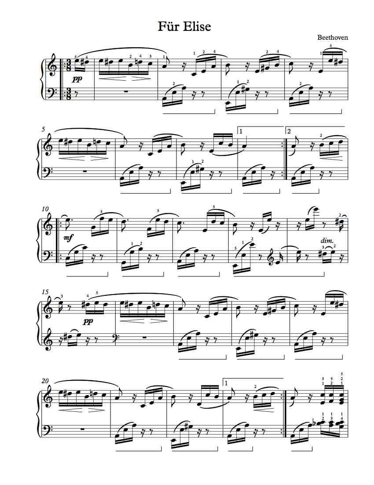
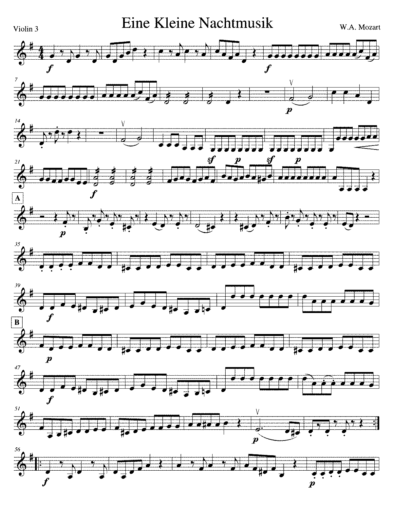
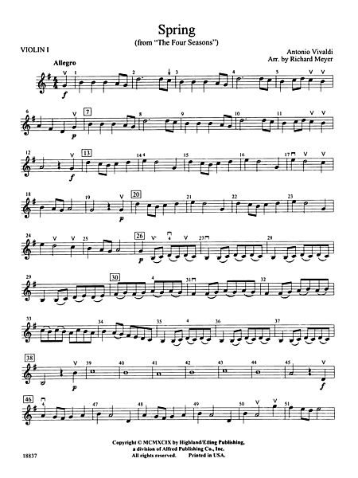
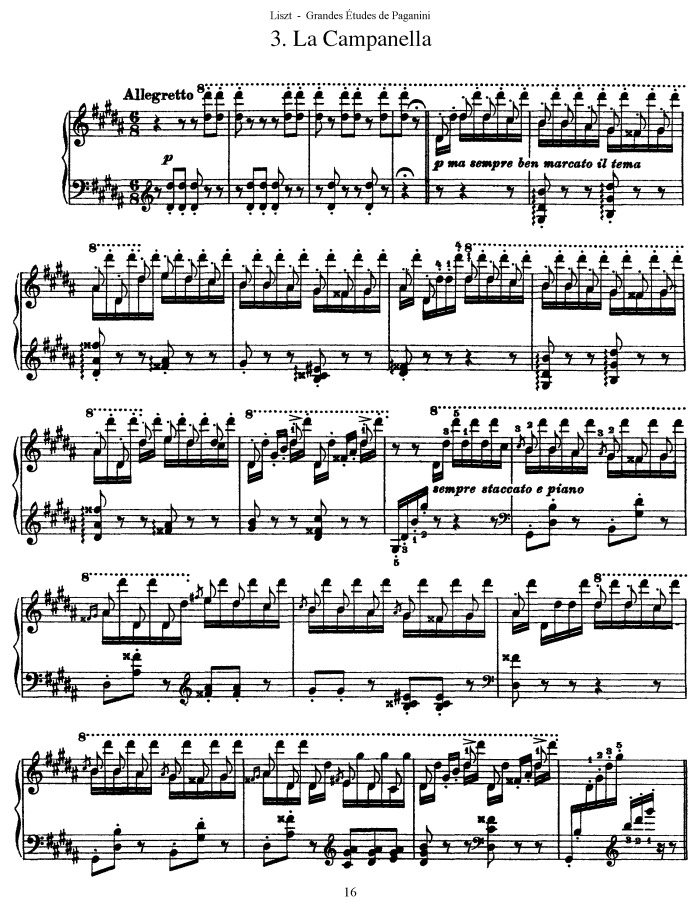

Compositions

Whether they're a musician or not, Beethoven's Fur Elise is universally recognized.

Composed by Mozart, this orchestral piece will forever remain a recognizable tune.

The Four Seasons, composed by Vivaldi, is a combination of 4 violin concerti.

An extremely virtuosic piece by Paganini, the Campanella is the perfect opportunity
for a musician to showcase their skill and talent.